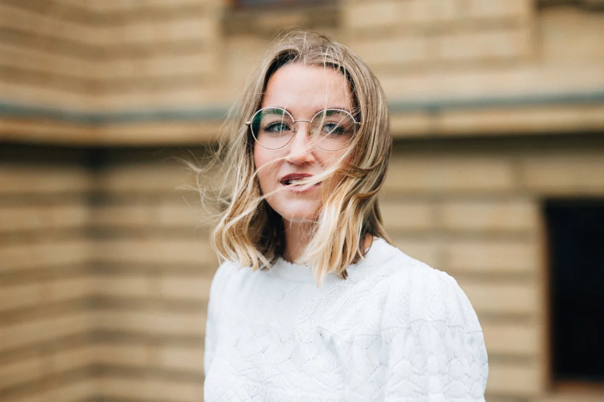
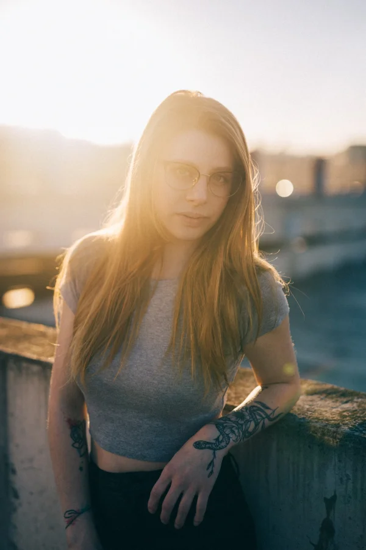
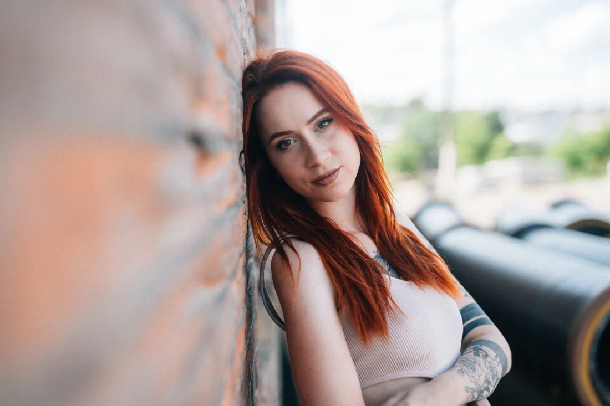
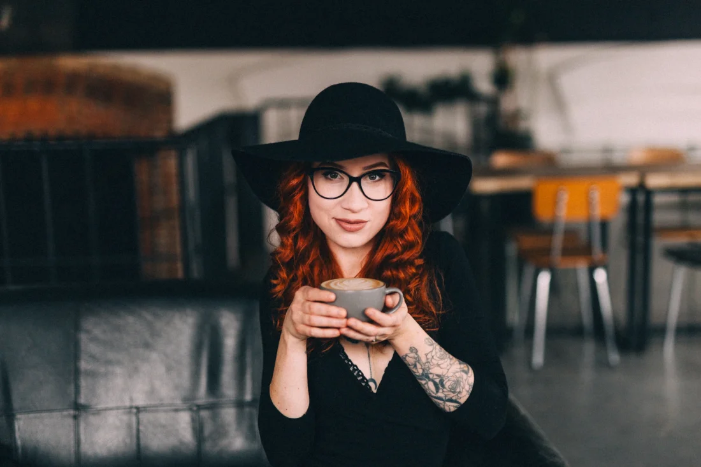
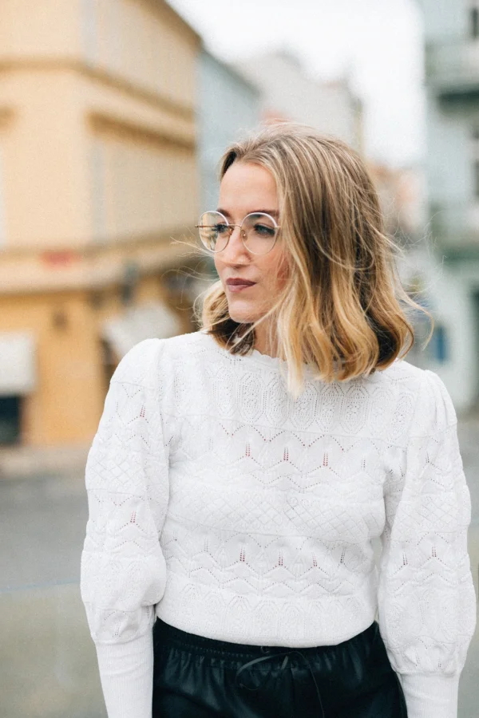
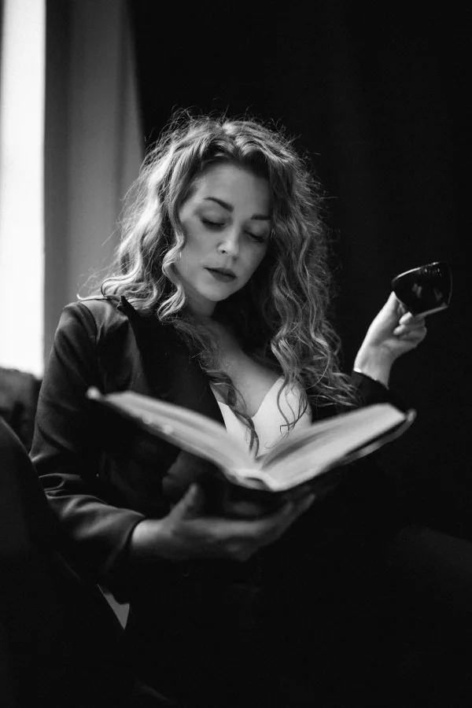

Ukázky
Pár snímků
Výběr z mého portfolia. Víc záběrů najdete na foto webu.








Proč to dělám
Zajímají mě lidé, ne pózy
Dobrý portrét nevzniká z techniky. Vzniká z okamžiku, kdy se před objektivem přestanete hlídat a z pózy zůstane jen člověk.
Nejvíc mě na focení baví lidé a to, jak se jejich nálada ukáže v obličeji. Tu nenastavíte na foťáku. Jde jen počkat a nenarušit ji.
Portrétům se věnuji řadu let. Fotky pak slouží k tomu, k čemu je potřebujete: na LinkedIn, na web, na sociální sítě, nebo jen tak pro sebe.
Jak focení probíhá
Od první zprávy po hotové fotky
-
Domluva
Nejdřív si řekneme, k čemu fotky potřebujete a jak mají působit. Profesionálně na LinkedIn, uvolněně na web, osobně pro sebe. Podle toho se pak volí všechno ostatní.
-
Místo a čas
Vybereme místo a dobu, kdy sedí světlo. Ve městě, v přírodě nebo jinde, podle toho, jaký má být výsledek.
-
Focení
Fotím v klidu a vedu vás. Nemusíte umět pózovat, stačí být sami sebou. Povídáme si, procházíme se, zkoušíme. Nejlepší záběry vznikají většinou mezi pózami.
-
Výběr a úprava
Z focení vyberu nejlepší záběry a jemně je upravím: světlo, barvy a drobnosti, které ruší. Člověk má na fotce vypadat jako on sám, jen v dobrý den.
-
Předání
Hotové fotky vám předám v podobě, kterou potřebujete, ať už na web, sociální sítě, nebo do tisku.
Na čem mi záleží
Čtyři věci, na kterých stavím
Přirozenost
Fotka má vypadat jako vy, ne jako někdo jiný. Žádná křečovitá póza a žádná přehnaná retuš.
Světlo
Světlo dělá z fotky portrét. Hledám ho, místo abych ho nahrazoval, a podle něj vybírám místo i čas.
Klid
Kdo je v klidu, vypadá dobře. Proto dávám focení čas a nikoho nepopoháním.
Výběr
Raději méně dobrých fotek než hromada průměrných. Dostanete ty, které za to stojí.
Časté otázky
Než se ozvete
K čemu se portrétní fotky hodí?
Na LinkedIn, firemní web, sociální sítě, do článků a medailonků, nebo jen tak pro sebe. Při domluvě společně určíme, co potřebujete, a podle toho focení naplánuju.
Co když neumím pózovat?
To není problém, většina lidí neumí. Vedu vás celým focením a říkám, co dělat. Nejlepší záběry stejně vznikají ve chvíli, kdy zapomenete, že vás někdo fotí.
Co si mám obléct?
Něco, v čem se cítíte dobře a co k vám sedí. Vyhněte se výrazným potiskům a nápisům, které odvádějí pozornost od obličeje. Podrobnosti si řekneme při domluvě.
Kde focení probíhá?
Nejčastěji venku ve městě nebo v přírodě, kde je přirozené světlo. Místo vybereme podle toho, jaký má být výsledek a kde se budete cítit dobře.
Upravujete fotky?
Ano, jemně: světlo, barvy a drobné rušivé detaily. Cílem není změnit, jak vypadáte, ale ukázat vás v dobrém světle.
Chcete portrét? Ozvěte se.
Napište mi, k čemu fotky potřebujete, a domluvíme se, jak na to.
Napsat mi